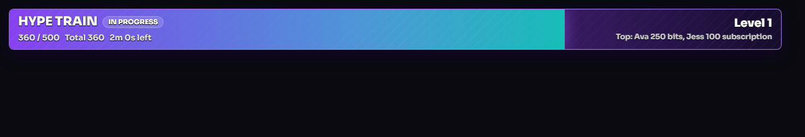
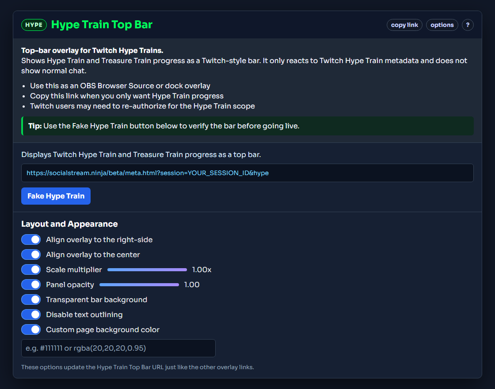

ما يفعله هذا التراكب
Hype Train Top Bar هو تراكب مخصص لأحداث Hype Train وTreasure Train في Twitch. يعرض المستوى الحالي والتقدم والإجمالي والمؤقت وأبرز المساهمين في تخطيط شريط علوي.
لا يعرض رسائل الدردشة العادية. تتكون بيانات Hype Train من بيانات وصفية فقط، لذا يُحدَّث الشريط عندما يرسل Twitch حدث Hype Train.

قبل البدء
- استخدم وضع Twitch WebSocket لالتقاط أحداث Twitch.
- إذا طُلب ذلك، فأعد تفويض Twitch حتى يستطيع Social Stream Ninja طلب نطاق
channel:read:hype_train. - أضف Hype Train Top Bar كمصدر متصفح، وليس كتراكب دردشة عادي.
مهم: لن يظهر Hype Train في تراكب الدردشة العادي. استخدم Hype Train Top Bar أو Meta Data Bar أو
events.html لعرضه.
إعداده من النافذة المنبثقة
- افتح نافذة Social Stream Ninja المنبثقة.
- ابحث عن مقياس الحماس وعدد المشاهدين.
- انسخ الشريط العلوي لقطار الحماس .
- أضف ذلك الرابط إلى OBS كمصدر متصفح.
- استخدم Hype Train وهمي (Fake Hype Train) للتأكد من ظهور الشريط.

نصيحة: يتضمن عنوان URL المنسوخ
&hype، مما يجعل التراكب يركز على أحداث Hype Train وTreasure Train.
تخصيص الشريط
تعمل خيارات Hype Train Top Bar كخيارات التراكبات الأخرى في النافذة المنبثقة. بدّل أحد الخيارات، ثم انسخ الرابط المحدَّث مجددًا.
- محاذاة التراكب إلى اليمين: يضع الشريط بمحاذاة الحافة اليمنى.
- محاذاة التراكب إلى الوسط: يوسّط الشريط أفقيًا.
- معامل الحجم: يصغّر الشريط أو يكبّره.
- عتامة اللوحة: يضبط عتامة الشريط بالكامل.
- خلفية شريط شفافة: يزيل الخلفية الممتلئة خلف الشريط.
- تعطيل تحديد النص: يزيل ظل النص الأسود.
- لون مخصص لخلفية الصفحة: مفيد عند الاختبار خارج OBS أو عندما تريد خلفية صفحة غير شفافة.
خيارات الاختبار
- استخدم Hype Train وهمي (Fake Hype Train) في النافذة المنبثقة لإجراء أسرع اختبار.
- استخدم
sampleapi.htmlواختر إعداد Hype Train مسبقًا إذا أردت الاختبار عبر مسار API. - استخدم
events.htmlإذا أردت التأكد من استقبال حدث Twitch Hype Train الخام.
إذا لم يظهر
- تأكد من إعادة تفويض حساب Twitch بعد إضافة دعم Hype Train.
- تأكد من أن رابط التراكب المنسوخ يتضمن معرّف الجلسة نفسه الموجود في النافذة المنبثقة لـSocial Stream Ninja.
- تأكد من أن عنوان URL يتضمن
&hype. - اختبر باستخدام Hype Train وهمي (Fake Hype Train) .
- افتح
events.htmlمع الجلسة نفسها للتحقق من وصول البيانات الوصفية لـHype Train.